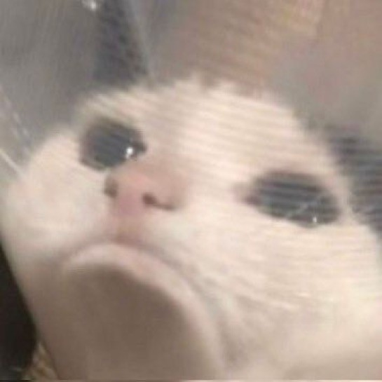

最もユニークなたまごっち
YIYIYIYIYIYIII🔥! Voici ton nouveau Tamagotchi dans une édition super limitée : Echomori Style 🐟 — LE Tamagotchi que tout le monde s'arrache (disponible en un seul exemplaire !).
Comment ça marche ?
- Fais-le grandir, entraîne-le et SLAY GIRLLLL 💅 !
- Plus tu t’en occupes, plus IL DEVIENT UNE ROCKSTAR D'EXCEPTION 🔥.
- Prends en soin, SINON IL MEURT ☠️.
- Plusieurs fonctionnalités sont cachées, à toi de les découvrir 🔎!
- Ce Tamagotchi fonctionne sur batterie, pense à le recharger une fois par jour !
Ce Tamagotchi n’apparaît qu’une fois par génération.
Tu as été choisie. Bonne chance. 🐟✨
Mini‑jeu : Une seule carte gagnante
Clique sur une des trois cartes. Si tu tombes sur la carte shiny, tu gagnes ce qu'elle montre !
Contact
Tu n'es pas satisfaite de ton produit ? Dépose une réclamation ici :
